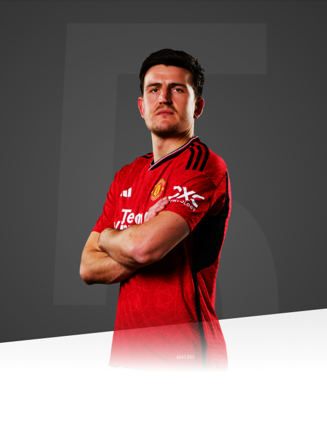

It's an amazing club. It's a club I've always watched and I always looked up to when I was younger.

AGE
30
APPEARANCES
179
CLEAN SHEETS
7
BIOGRAPHY
Harry Maguire has risen through the leagues to establish himself as one of the most reliable centre-backs in the game.
However, his route to the top has not always been an easy one.
The Sheffield-born star came through the youth system at his hometown club Sheffield United. A resilient and tough-tackling defender, Maguire progressed into the first team at the age of 18 and made his debut for the Blades against Cardiff City in April 2011.
The early signs of Harry's quality were clear to see. Despite being introduced as a half-time substitute in that Championship clash with the Bluebirds, the then-teenager was named Man of the Match.
Sadly, that campaign ended in relegation for Sheffield United, yet Maguire, who featured five times in his first season, had impressed the locals at Bramall Lane. He would go on to spend three more years with the Yorkshire outfit and make 166 appearances for the Blades, while netting on 12 occasions.
A host of top-tier sides had been monitoring Maguire's development, but it was one of United's finest centre-backs of all time who ultimately managed to prize Harry from his boyhood club. However, after signing the youngster at Hull City, Steve Bruce was wary of blooding him into the side, ahead of experienced defenders such as former Red James Chester, Curtis Davies and Michael Dawson.
After playing just a handful of games in the first half of the 2014/15 campaign, Maguire was sent on loan to struggling Wigan Athletic, who, like Hull, were relegated that season. But with Maguire at the heart of defence, the Tigers instantly returned to the Premier League in the following campaign.
Aged 23 at the time, Harry was five years into his professional career and had already faced his fair share of adversity. While Hull again failed to beat the drop in 2016/17, Maguire's individual performances caught the eye. In fact, so impressive were Harry's displays, he was voted the club's Player of the Year, earned a move to Leicester and was called up to Gareth Southgate's England squad.
Always a colossal presence at the back, it was during his time with Leicester that Maguire developed the passing side to his game and he established himself as one of the division's standout centre-backs, while also becoming a cornerstone of England's recent World Cup and Nations League campaigns.
He has also proved effective at the other end of the pitch and famously headed home the Three Lions' opener against Sweden in the 2018 World Cup quarter-final, while scoring five goals for the Foxes. Maguire even netted an injury-time equaliser against United in December 2017 to earn his former employers a 2-2 draw.
Harry's rise through the divisions, while also overcoming the occasional moment of hardship, has seen him mature into an all-round leader - one the world's top sides simply could not overlook.
But it was the allure of playing for a club of such stature and pedigree that ultimately convinced Harry to swap the East Midlands for Old Trafford, completing his move to the Reds on 5 August 2019.
It didn't take long for Maguire to make an impact on the dressing room and, after wearing the captain's armband on a handful of occasions, he was appointed as United's new permanent skipper on 17 January 2020 following Ashley Young's departure to Inter Milan. Nine days later, Harry led by example in the Emirates FA Cup win over Tranmere Rovers as his first goal for the club triggered an eventual 6-0 triumph.
The skipper then scored an important header at Stamford Bridge as United beat Chelsea in a crucial game for the Champions League spots. He also got on the scoresheet in the FA Cup as Norwich were beaten late at Carrow Road as United reached the semi-final of the tournament.
Maguire remained a mainstay in the United defence throughout the season which ended with a third-place finish and Champions League qualification. Both were secured with a 2-0 win at his former home ground, the King Power Stadium, on the last day of the 2019/20 campaign.
There was further improvement the following term, with Ole Gunnar Solskjaer's side finishing second, but Maguire missed the end of the season - and the Europa League final - with injury.
Despite suffering some niggling injuries throughout the season, Maguire racked up 37 appearances for United in 2021/22. Trusted by Solskjaer - and then interim manager Ralf Rangnick - Harry made 35 starts in what ended up being a disappointing season for the Reds as we finished sixth in the Premier League.
Maguire contributed to some of our most crucial victories of the season, such as his strong defensive display in our 1-0 win over West Ham. The skipper also got on the scoresheet twice in 2021/22, slotting home a Champions League goal against Atalanta and powering in a header away to Leeds in the Premier League.
Club captain Maguire continued to lead by example in 2022/23 and he lifted his first trophy as a Red, alongside Bruno Fernandes, after the 2-0 Carabao Cup final win over Newcastle United at Wembley. In all, Maguire made 31 appearances in the first season under Erik ten Hag, with United winning six of the eight matches he started in the league.